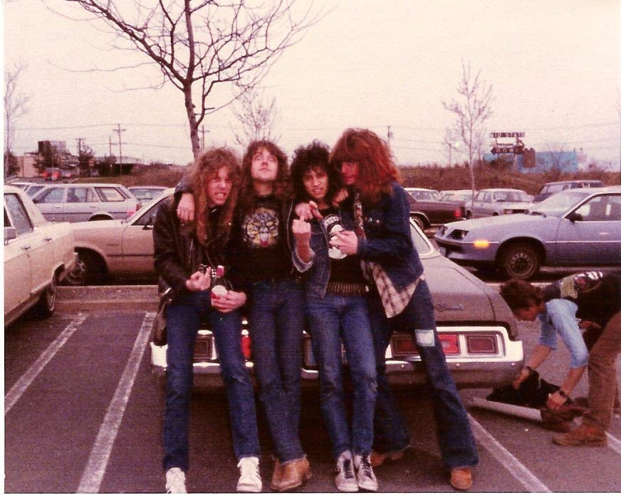

Thrash metal generally features fast tempos, low-register, complex guitar riffs, high-register guitar solos, and double bass drumming. The rhythm guitar parts are played with heavy distortion and often palm muted to create a tighter and more precise sound. Vocally, thrash metal can employ anything from melodic singing to shouted or screamed vocals. Most guitar solos are played at high speed and technically demanding, as they are usually characterized by shredding, and use advanced techniques such as sweep picking, legato phrasing, alternate picking, tremolo picking, string skipping, and two-hand tapping. David Ellefson, the original bassist of Megadeth, described thrash metal as "a combination of the attitude from punk rock but the riffs and complexities of traditional metal." The guitar riffs often use chromatic scales and emphasize the tritone and diminished intervals, instead of using conventional single-scale-based riffing. For example, the intro riff of Metallica's "Master of Puppets" (the title track of the namesake album) is a chromatic descent, followed by a chromatic ascent based on the tritone.
Metallica
Speed, pacing, and time changes also define thrash metal. Thrash tends to have an accelerating feel which may be due in large part to its aggressive drumming style. For example, drummers often use two bass drums, or a double-bass pedal to create a relentless, driving beat. Cymbal stops/chokes are often used to transition from one riff to another or to precede an acceleration in tempo. Some common characteristics of the genre are fast guitar riffs with aggressive picking styles and fast guitar solos, and extensive use of two bass drums as opposed to the conventional use of only one, typical of most rock music. To keep up with the other instruments, many bassists use a plectrum (pick). However, some prominent thrash metal bassists have used their fingers, such as Frank Bello, Greg Christian, Steve Di Giorgio, Robert Trujillo, and Cliff Burton. Several bassists use a distorted bass tone, an approach popularized by Burton and Motörhead's Lemmy. Lyrical themes in thrash metal include warfare, corruption, injustice, murder, suicide, isolation, alienation, addiction, and other maladies that afflict the individual and society. In addition, politics, particularly pessimism and dissatisfaction towards politics, are common themes among thrash metal bands. Humor and irony can occasionally be found (Anthrax for example), but they are limited, and are an exception rather than a rule.
Slayer